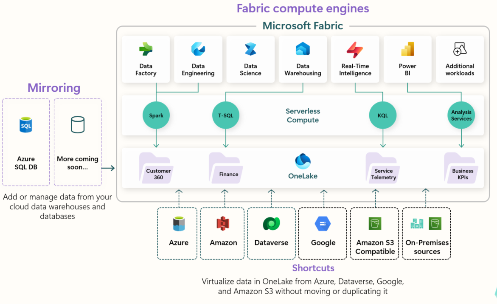
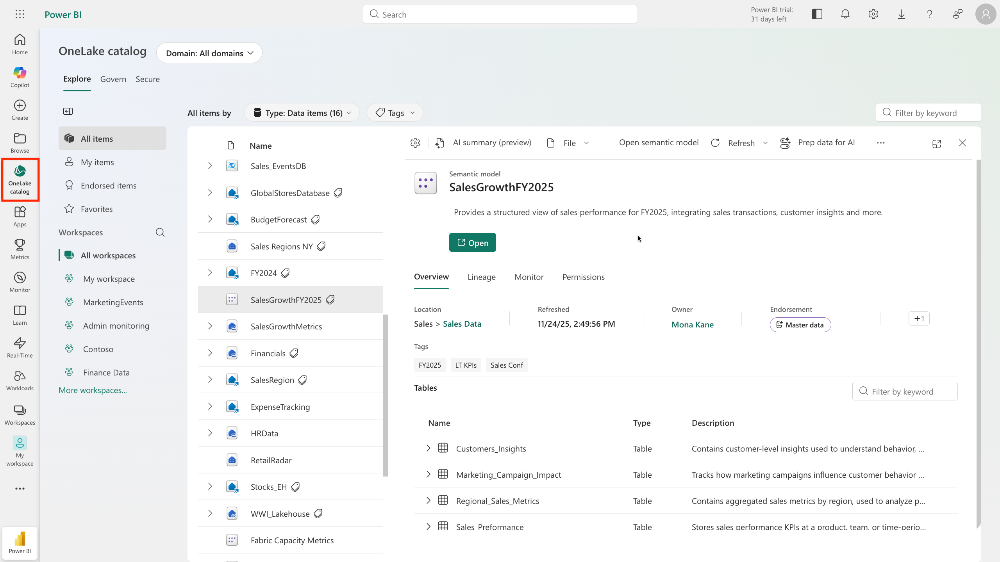

Core Idea — What Is Fabric?
End-to-end analytics platform — a single, integrated SaaS environment for ingesting, preparing, governing, and analyzing data at scale
Built on OneLake — one unified data lake where all workloads store and read data in open delta-parquet format
Analytics + AI in one place — the same governed data that powers reports and dashboards is directly available to Copilot, data agents, and Fabric IQ
No more stitching services together — replaces fragmented Azure tools (ADF, Synapse, ADLS, Power BI, ADX) with one unified platform
OneLake — Centralized Storage
OneLake is Fabric’s centralized data storage architecture. Think of it as “OneDrive for analytics.”

All Fabric compute engines access the same OneLake data storage — no movement or duplication needed
Single logical lake — unifies data across regions and clouds without moving or duplicating it
Built on ADLS Gen2 — but fully abstracted as SaaS, no storage accounts to manage
Delta-Parquet format — default for all tabular data; all engines interact seamlessly
Also supports CSV, JSON, Parquet, and other formats in the Files/ area
Shortcuts — references to external data (ADLS, Amazon S3, Dataverse) without copying; stays in sync with source
AI-ready — because all data is in one place with open format, Copilot and agents access it with no separate pipelines
Platform Architecture
Three layers — all workloads share the same storage and platform services.
Layer 3 — Workloads
Nine Analytics Experiences
Power BI, Data Factory, Data Engineering, Data Warehouse, Data Science, Real-Time Intelligence, Databases, Industry Solutions, IQ (Preview)
Layer 2 — Platform Services
Shared Capabilities
Admin portal · Governance (Purview) · OneLake catalog · Workspace roles · Copilot · Git integration · APIs & SDKs
Layer 1 — Foundation
OneLake
Single logical data lake per tenant · Delta-Parquet format · All workloads read/write same data · Shortcuts for external sources
The 9 Workloads
Each workload offers different item types for storing, processing, and analyzing data — all on OneLake.
Data Engineering
Lakehouses, notebooks, Spark jobs — build, transform, and share your data estate
Data Factory
Ingest, transform, and orchestrate data with 200+ connectors and Dataflows Gen2
Data Warehouse
Full T-SQL warehouse — combine multiple sources for traditional analytics
Real-Time Intelligence
Eventhouse, KQL databases — process, monitor, and analyze streaming data
Data Science
ML experiments, MLflow, model registry — detect trends, predict values
Databases
Operational SQL databases, mirroring from Azure SQL, Cosmos DB, Snowflake, Databricks
Industry Solutions
Out-of-the-box data solutions tailored for specific industries
IQ (Preview)
Ontologies, graphs, semantic models — organize data in the language of your business
Power BI
Reports, dashboards, semantic models — data-driven decisions with DirectLake
Fabric integrates Power BI, Azure Synapse, and Azure Data Factory into one platform. Supports data mesh — decentralized ownership, centralized governance.
Data Teams — Who Uses What
Fabric removes silos — every role works on the same platform and contributes to AI readiness.
Data Engineers
Ingest, transform, load data into OneLake using Pipelines. Store in lakehouses (Delta-Parquet). Use Notebooks for advanced scripting.
Analytics Engineers
Bridge engineering & analysis. Curate data assets in lakehouses, ensure quality, create semantic models in Power BI.
Data Analysts
Transform data upstream with Dataflows. Connect to OneLake via Direct Lake mode. Create interactive reports in Power BI.
Data Scientists
Notebooks with Python & Spark for ML models. Integrate with Azure ML. Predictions become grounding data for Copilot & AI agents.
Low-to-No-Code Users & Citizen Developers
Discover datasets via OneLake catalog. Use Power BI templates for quick reports. Dataflows for simple ETL. Ask questions in natural language with Copilot.
Every role contributes to AI: engineers maintain clean data → analytics engineers create consistent semantic models → AI tools generate accurate answers.
Enable & Use Fabric
Who Can Enable
Fabric administrator — manages Fabric settings
Power Platform administrator — oversees Power Platform services
Global administrator — implicit admin rights
Enable in Admin portal → Tenant settings for entire org or specific security groups
Workspace Roles
For finer control, use item-level permissions
Workspace settings: license type, OneDrive access, ADLS Gen2 connection, Git integration, Spark workload settings
OneLake catalog: discover and connect to data sources — filter by workspace, domain, keyword, or item type
Data lineage view: visual view of data flow and dependencies within a workspace

The OneLake catalog — discover and connect to data sources across your organization
AI Capabilities in Fabric
The Three IQ Workloads
Fabric IQ
Models business data — ontologies, semantic models, graphs. Agents reason over analytics in OneLake and Power BI.
Foundry IQ
Connects structured & unstructured data across Azure, SharePoint, OneLake, and the web. Permission-aware enterprise knowledge.
Work IQ
Captures collaboration signals — documents, meetings, chats, workflows. Insight into how your organization operates.
Data Agents
Conversational interfaces — users ask questions in natural language, agents translate to structured queries across lakehouses, warehouses, and semantic models
Ontology-aware — agents connect to your ontology to understand business concepts, not just table schemas
Copilot Across Workloads
Code completion & generation — suggestions in notebooks, SQL from natural language, questions → KQL
Data transformation guidance — code generation and plain-language explanations in Data Factory
Report & insight generation — auto-generate reports in Power BI, page summaries, natural language Q&A
Copilot is enabled by default. Admins control it via Tenant settings or at the capacity/security-group level.
Knowledge Check
What is a key benefit of using Microsoft Fabric in data projects?
It allows data professionals to work independently, without collaboration
It requires duplicating data across systems to ensure availability
It provides a single, integrated environment for collaboration on data projects
What is the default storage format for Fabric’s OneLake?
Delta-Parquet
JSON
CSV
Which Fabric experience is used to move and transform data?
Data Science
Data Warehousing
Data Factory
Why is OneLake’s unified storage model important for AI capabilities in Fabric?
It requires all data to be converted to a proprietary format for AI processing
AI tools like Copilot and data agents can access the same governed data without separate preparation pipelines
It stores AI models alongside the data they process
×